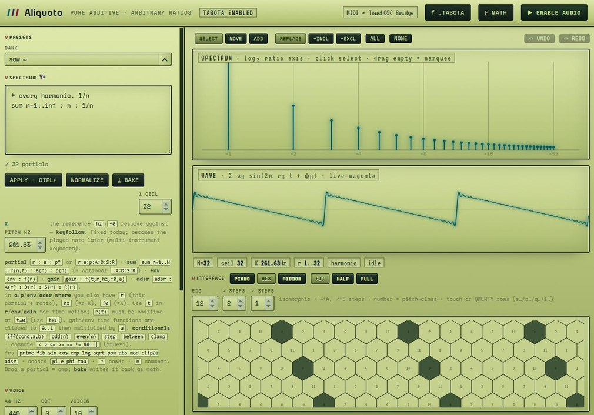
Aliquoto
A browser synthesizer that generates harmonic and inharmonic timbres by distributing additive partials across just-intonation intervals and geometric series.


Artist-researcher · singer-songwriter · creative technologist
Xyh Tamura is a Filipino/Ilonggo-Japanese composer, singer-songwriter, and artist-researcher based in Manila, with a BS in Physics (cum laude, Theoretical Physics) from UP Diliman. Their instruments are built from the equations that describe them: waveguides, resonators, ray tracing, memristor histories, and two-dimensional physics simulations. Alongside the instruments they write notation for pitch measured in hertz, and tools that read a recording before they act on it.
Equation-first synthesis
Anexacta is a collection of browser instruments that turn mathematical and physical models into playable sound synthesizers.

A browser synthesizer that generates harmonic and inharmonic timbres by distributing additive partials across just-intonation intervals and geometric series.
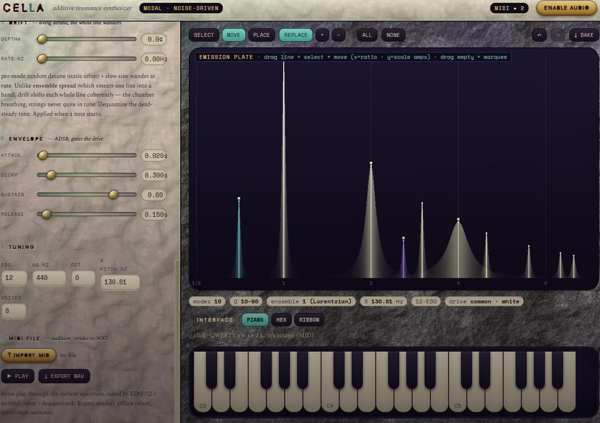
A 2D wave reverberator that simulates wave propagation across coupled cellular grid meshes to produce spatial acoustic decay.
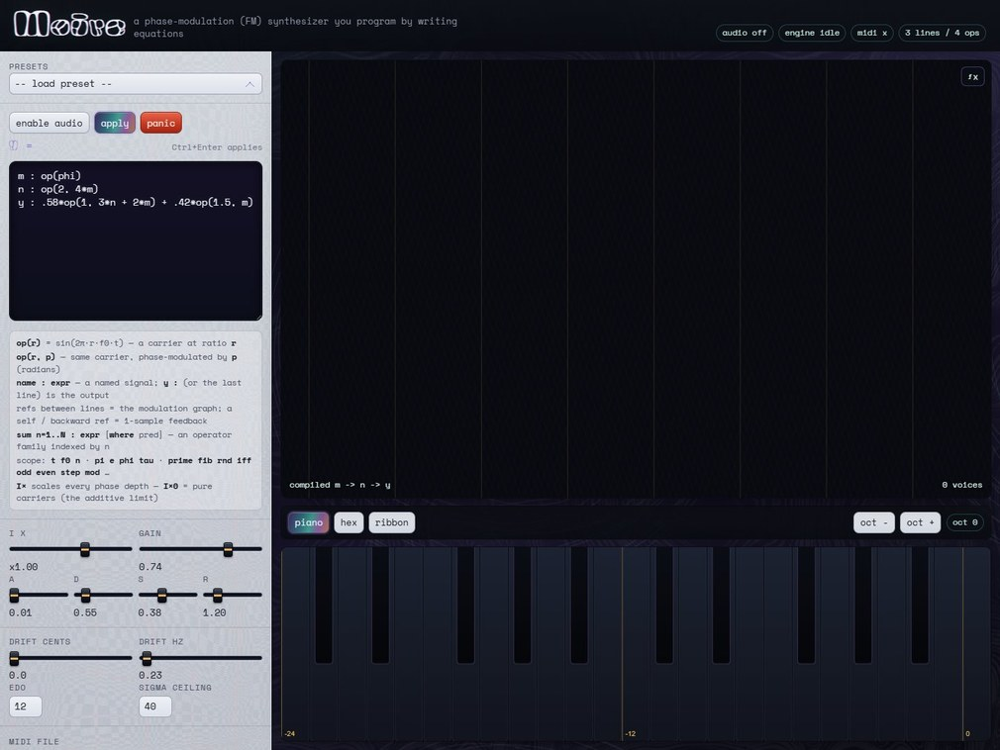
An optical sound generator that converts visual interference fringes and overlapping spatial frequencies into microtonal FM sidebands.

A nonlinear synthesizer that models memristive state transitions to inject analog hysteresis, resistance memory, and harmonic distortion into the signal path.
Digital waveguide · physical modeling
A browser organ model with no range restriction: one waveguide specification evaluated for pipe lengths from 8.575 millimeters to 40,075 kilometers
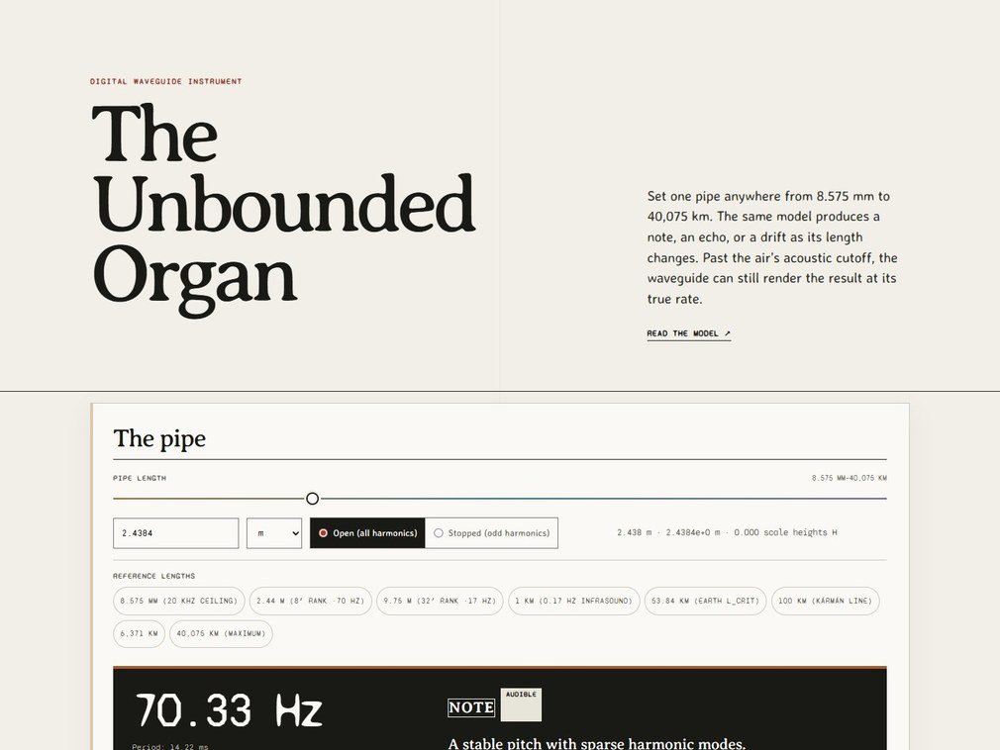


The resonator is a delay line of length 2L/c with reflection signs at the ends, so the mode series comes from the physics and not from a chosen number of partials. The model never changes with pipe length. What changes is what the output is. At a few meters the fundamental, c/2L for an open pipe and c/4L for a stopped one, lies in the audible range and the output is a note. At tens of kilometers the modes are too dense to give a pitch and the reflections read as a diffuse echo. At Earth's radius the fundamental is 26.92 µHz, a period of 10.32 hours, and the output is a slow drift.
Ray tracing · room acoustics
Gliese generates delay taps by tracing sound rays through a model atmosphere · Metachamber is an offline reverberator that fits each decay to the silence that follows


Gliese is a multi-tap delay and reverb generator. The refractive-index profile has a sound channel at its axis, and rays launched from a point source are integrated with the velocity Verlet method, reflecting at an inner and an outer boundary. A tap is recorded each time a ray passes through the receiver, with gain set by geometric spreading and reflection loss.
The model comes from my 2012 undergraduate thesis at the National Institute of Physics, UP Diliman, on ray propagation in a medium with a spherically symmetric index of refraction, treated through the Lagrangian formulation (adviser Jose Perico H. Esguerra).
Metachamber is part of Hindcasts. It reads a whole recording first, measures the gaps between notes that have not yet sounded, and sets each reverb tail to the gap that follows it.
Browser instruments · physical simulation
Seven browser instruments in which a two-dimensional physics simulation drives the sound


A suite of seven browser instruments where two-dimensional physics simulations generate sound in real time using the Web Audio API. Players interact directly with animated physical bodies on an HTML canvas: striking circular cell membranes, plucking elastic fiber networks, perturbing fluid boundaries, and opening pressure-sensitive stomatal pores. Geometric traits, including body radius, edge tension, collision velocity, and material damping, calculate acoustic properties directly to excite modal resonators, delay lines, and digital waveguides.
Three instruments integrate live environmental telemetry alongside touch: regional marine wave data from Open-Meteo, global earthquake feeds from the USGS, and local atmospheric data from Manila perturb fluid drift and modulate resonance. Each instrument is a self-contained web page running in mobile and desktop browsers with no installation, supporting touch gestures on phones as well as mouse input.
Measured signal · musical structure
An onset analyzer and hit-seeded granulator: audio in, MIDI and audio out

kíkik takes a field recording and treats every transient peak as a hit. Each hit does two things at once: it triggers a MIDI note, and it releases one grain cut from any sound the player supplies. The recording supplies the timing of the piece that follows.
The source recording is a cicada, Platypleura fulvigera, made in 2016 outside a former home near Diliman. Kíkik is the Hiligaynon word for cicada, named for its call. The grains are cut from a multilingual Ilonggo, Japanese, and English poem. kíkik is the audio-input counterpart of Binlod, which scatters grains around the note-ons of a written score.
Formats and spatial notation
Open score format and notation language · recursive metrical grammar · spatial score and text editor


Tabota is a plain-text score format and JavaScript runtime that stores pitch continuously in hertz. It encodes unquantized vocal glides, microtonal inflections, Bézier pitch contours, spatial trajectories, and media triggers as temporal objects.
Cycla is a formal grammar and parser for nested, additive, and non-isochronous time structures. Compact .cyc expressions define rhythm trees and fractional phase shifts that compile into Tabota timelines.
Stanzuary is a 3D WebGL score and text editor that arranges musical events, phonemes, and text fragments across a navigable three-dimensional coordinate space.
Voice as material
Desiderata — vocal ambient album · written, performed, produced, mixed, and mastered by Xyh Tamura · selected for The Wrong Eclipse, a pavilion of The Wrong Biennale curated by David Quiles Guilló
xyhnthesizer — Kontakt vocal organ sampled from Xyh's singing
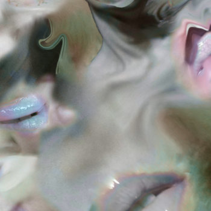
Desiderata, 2026.
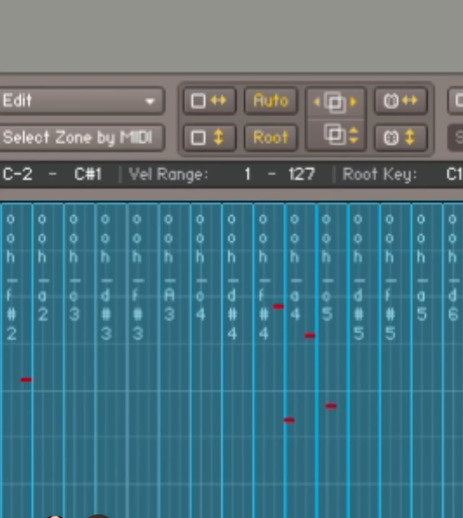
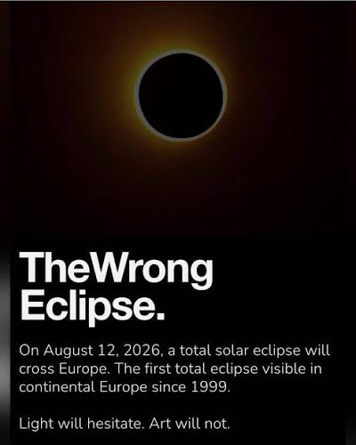
Desiderata is an ambient vocal album built entirely from recorded acoustic voice and breath. Tracks layer time-stretched, granulated vocalizations and microtonally vocoded passages against ocean and insect field recordings. The companion xyhnthesizer is a Kontakt vocal organ sampled directly from the tracking sessions, mapping sustained phonemes and breath registers across polyphonic keyboard splits.
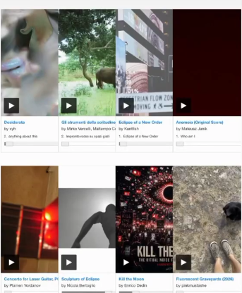
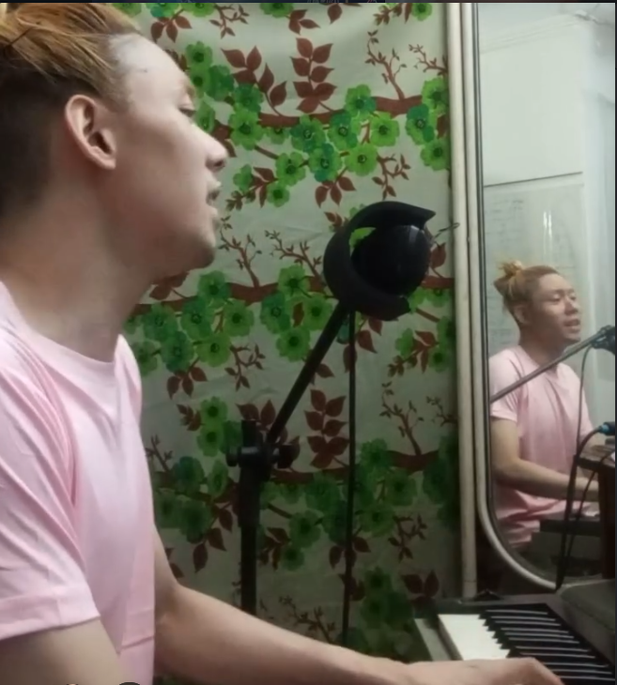
The Wrong Eclipse pavilion, with Desiderata listed first · voice and keyboard at home.
Non-causal media processing
Hindcasts is a suite of offline audio and video tools that process a static file as a complete span, operating in both temporal directions before events arrive.

An offline audio and video processor that simulates magnetic tape print-through and tape-spool magnetic hysteresis.
An offline acoustic reverberator that measures forthcoming gaps between notes to tailor reverb decay lengths exactly to future silences.

An acausal granular delay and sidechain processor with negative delay, lookahead ducking, and pitch spray.

An offline video feedback generator that renders anticipatory optical particle trails and precursor echoes prior to visual motions.

A multi-band dynamic audio processor that computes time-occupancy amplitude histograms across an entire audio file, letting users redraw custom compression curves without threshold attack/release pumping.

An offline video glitch processor that freezes localized screen cells and populates them with image data sampled from future video frames.

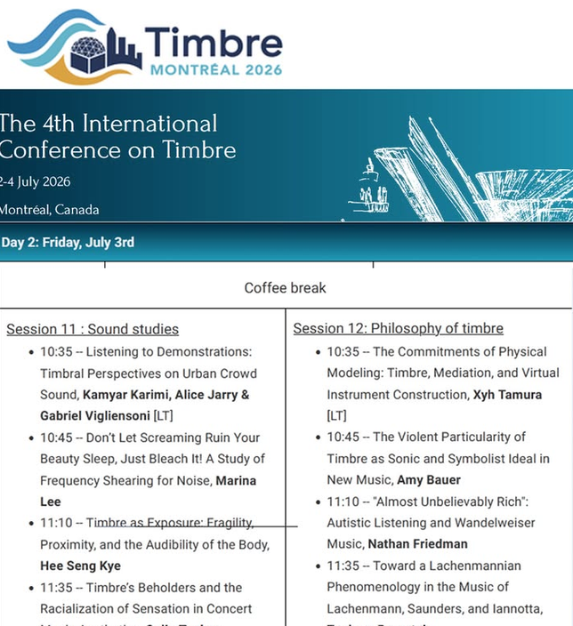
Research · theory of timbre
International Conference on Timbre · Université de Montréal · July 2026
A conference paper analyzing digital waveguide and modal synthesis instruments as formal theories of timbre. Each synthesis algorithm commits to assumptions about material damping, excitation mechanics, and acoustic geometry, and the paper reads an instrument's source code as the set of those commitments.
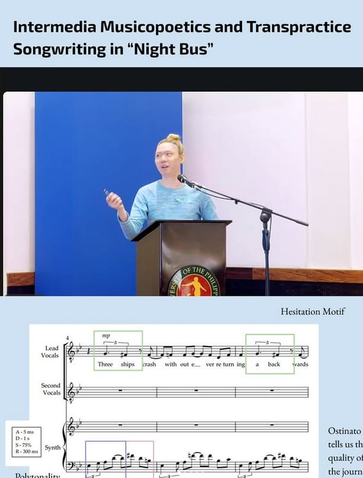
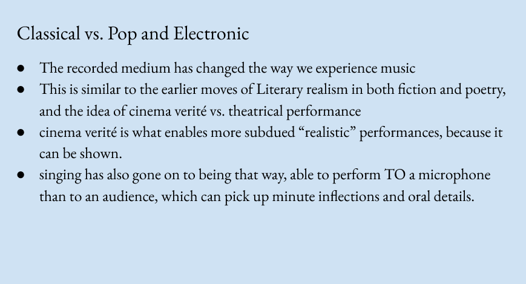
Song and metric analysis
Presented at Saliksik-Musika II, University of the Philippines, June 2025
An electroacoustic song and a paper on its rhythm. The paper analyzes how historical Tagalog rowing songs (soliranin) and street vendor chants (indolanin) persist as metric structures in Metro Manila commuting.